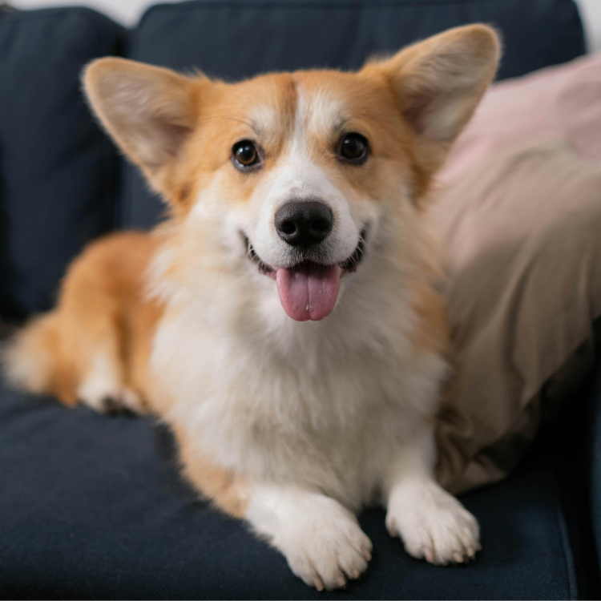

認識一下柯基犬，這種小而強大的品種以其可愛的短腿、表情豐富的臉和開朗的性格而聞名。柯基犬原產於威爾士，擁有豐富的牧羊犬歷史，並捕獲了包括英國皇室在內的許多人的心。
柯基犬有兩個主要品種：彭布羅克威爾士柯基和卡迪根威爾士柯基。彭布羅克因其斷尾而被識別，由於英國女王伊麗莎白二世的喜愛，彭布羅克變得非常受歡迎，女王一生中擁有超過30隻彭布羅克柯基。另一方面，卡迪根有長尾巴，體型稍大。這兩種類型共享共同的祖先，最初被培育來放牧牛羊。如果你對繁殖柯基感興趣，了解它們的歷史至關重要。
柯基犬是小型但結實的狗。它們最顯著的特徵是短腿和細長的身體，這使它們具有獨特而迷人的外觀。它們有豎立的大耳朵和充滿表情的狐狸般的臉。彭布羅克威爾士柯基通常重25-30磅，而卡迪根則稍重，重30-38磅。談到柯基，標誌性的"柯基臀部"是許多人喜愛的特徵。
柯基犬以其聰明、外向和活潑的性格而聞名。它們是聰明的狗，這使它們非常易於訓練，儘管它們獨立的性格有時會使訓練變得有些挑戰。它們忠誠且充滿愛心，成為家庭和個人的好夥伴。它們的牧羊背景意味著它們可能會試圖牧羊其他寵物甚至是孩子，這可能會相當有趣！
儘管體型小，柯基犬是需要定期運動才能保持快樂和健康的充沛精力犬。每日散步、遊戲時間和精神刺激是必需的。柯基在敏捷性和牧羊活動中表現出色，它們喜愛能夠鍛煉身心的活動。像互動玩具和拼圖餵食器這樣的產品可以很好地保持它們的娛樂。柯基小狗尤其需要大量運動來釋放其充沛的精力。
雖然柯基犬與邊境牧羊犬和澳大利亞牧羊犬等品種共享一些牧羊特徵，但它們的小體型和獨特的身體形狀使它們與眾不同。與較大的牧羊品種不同，柯基被培育來通過咬住牛的腳跟並利用其低矮的身材避免踢打來工作。
柯基犬是充滿樂趣和笑聲的狗狗，它們獨特的外貌加上充滿愛心和活力的性格，使它們成為狗迷們喜愛的品種。如果你正在尋找一個充滿個性和魅力的伴侶，柯基犬可能是你最好的選擇。從它們在威爾士的歷史根源到它們的皇室聯繫，柯基犬有很多值得提供的東西。不論你是對柯基犬感興趣，享受柯基的陪伴，還是僅僅喜愛著名的柯基屁股，這些狗狗一定會捕獲你的心。
在選購寵物用品時，以下是五間值得推薦的優質寵物店：
汪喵星球致力於提供貼近犬貓需求的產品。公司深信健康的寵物食品不應該是奢侈品，應該是每隻毛小孩能夠長期享用的基本需求。他們專注於打造高品質、營養豐富又平易近人的濕食，所有產品均由專業獸醫師和營養配方師精心調配把關。汪喵星球的願景是讓毛孩吃得更好，與主人一同慢慢變老。
小毛球是一家專賣汪星人與喵星人罐罐與零食的商店，該商店在蝦皮販售的潔牙棒，甚至達到50萬件以上的銷售。另外，商店中也販售一些寵物小玩具以及衣服。
米拓寵物旗艦店最熱銷的款式是貓狗零食的凍乾，銷售量達到驚人的535.7萬件，並且有著4.9顆星的好評。第二款熱銷款式日本品牌的豆腐砂，價格是非常實惠的銅板價，銷售量也達到21.6萬件，5星好評，尤其推薦給喵星人的主人。
寵星球是一家主要販售寵物生活必需品的商店，像是防滑墊、尿布墊、寵物涼墊、毛梳、貓砂、拾便袋等等，同時也販售有寵物零食。平實的價格是一大特點，商店內經常是銅板價格的商品，其熱銷款尿布墊有著23萬以上的銷售量。
歐豆K跟寵星球的性質有點相似，都是販售平價寵物生活必需品的商店，但毆豆K多了小動物像是倉鼠與兔子用品的販售。
這些店鋪不僅提供優質的產品，還能為您的寵物提供最佳的照顧和服務。希望這些推薦能幫助您更好地照顧您的毛小孩。
想要更深入了解狗狗的習性和如何照顧牠們嗎？請點擊以下連結閱讀更多相關文章。點我前往更多文章